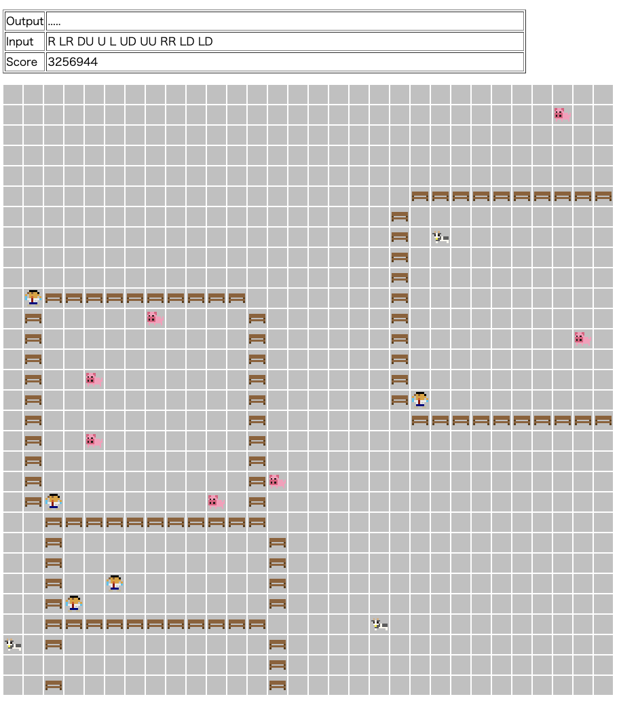

MC Digital プログラミングコンテスト 2022(AtCoder Heuristic Contest 008)¶

問題概要¶
- 30 * 30 マスのグリッド上に、N(10 ～ 20)匹のペットと M(5 ～ 10)人の人がいる
- 人は、移動または柵を設置することができる
- ただし、柵はペットに隣接するか、ペットか人がいると設置できない
- ペットは、種類によってターンでの移動規則が異なる
- 牛、豚、兎は、移動距離が異なるランダムウォーク
- 犬は、誰か人に向かうような動き＋ランダム移動
- 猫は、どこか目的地に向かうような動き＋ランダム移動
- 300 ターンの間、人の移動 → ペットの移動というのを繰り返す
- 最終的に、各人について、自分がいる領域のサイズが広く、その領域内にペットができるだけ少ないようにせよ
時間¶
343 時間
個人的メモ¶
- 2 週間だったのもあり、戦略の自由度が高く、また、スコアを出すためには結構作りきらないといけないため重実装気味な感じの問題だった
- 最適化というより、ルールベース作成コンテストという感じ
- 今回は、待受戦略(固定配置、小部屋たくさん)が有効で、上位に多かった模様
戦略¶
- 領域を囲い込むか、ペットを領域外に出すか
- 囲い込むように領域を作る場合、ペット数が結構多く、移動しまくるのもあり、大きく作ることが難しい
- 今回は、罠を張って、領域外にするような方法が有効だった模様
- 待受戦略か、追込戦略か
- ざっくり、部屋(罠)を用意して入ったペットを捕らえるか、こちらから追い込んで捕らえるか
- ただ、ほとんどのペットは人の配置に依存しない＆ランダムウォークなので、誘導するのが難しい
- 今回の場合、実装難易度も含めて待受戦略を取った人が多かった模様
- 不定形追込戦略が良さそうに見えるけど、細かいところが非自明的なのと、実装難易度が高い
柵の配置¶
- 固定形
- 待受戦略の場合、短冊/二型(縦、横、斜め)、CC 型、SS 型、O 型/□ 型などで部屋を作っておき、そこに入ったら塞ぐ
- 基本は、1 手か 2 手(2 人で 1 手、挟み撃ち)で捕獲できるような部屋
- それ以上の手数(例えば □ 型で 4 手で捕獲)だと、部屋サイズが大きくなりがちなのと人の移動/連携が大変など
- 部屋の空間は大きく取ってしまうと無駄が多くなるため、幅 1、長さ 3 ～ 5 程度のをたくさん(複数列)用意するのが効率的だった模様
- 斜めか、軸に並行かだと、あまり変わらないみたいだけど、その後の動きの実装の問題からか、軸に並行な配置が多かった模様
- また、固定形だと、理論値などの予想がしやすい
- 不定形
- 追込戦略の場合、複数人でいっしょに動いて一気に塞ぐ、みたいな感じで捕らえる
- (一応、300 ターン以内にほとんどのペットをたどることは可能みたいだけど、ペットが多いと回りきれない)
- 一方、少ないターンで捉えられないと、無駄な柵を配置しまくって移動や柵設置を妨げやすい
- ペットが毎回大きく動くので、そのターンで捉えられる配置と次のターンで捉えられる配置が結構ズレる
- 無駄な柵が多くなるとスコアも低くなる
- 雰囲気的には、追込戦略＆不定形が無駄な柵設置も少なく高スコアを狙えそうに見えるが、実装難易度が結構高い
- 複数人でのペットの追いかけ方や柵の配置など、どうするか自明ではなく、難しい
- 領域分割形
- 真ん中とかで 2 分割や 4 分割して、ペットがいたら塞ぐ、や、ペットが少ない方を選ぶ、ような戦略(またはそれを階層構造的に処理する)
- 2 分割の場合、理論的には、領域内のペットが少ない方を選べるので必ずペット数が半分以下にすることができてうれしい
- が、領域サイズが ½ ずつになってしまうため、スコアの上限値の減り方も大きく、基本的に数回は分割が必要なため、高スコアを取るのは難しい
- また、木構造的になるため、犬猫への対処が難しい
- 真ん中とかで 2 分割や 4 分割して、ペットがいたら塞ぐ、や、ペットが少ない方を選ぶ、ような戦略(またはそれを階層構造的に処理する)
- 配置パターンはいくつか用意して、そこから N,M に応じて選ぶ人が多かった模様
- 領域が木形状になってしまう場合
- 今回のスコア計算式だと、人はみんな同じ領域内にいたほうがよいため、2 領域にしたり、誰かを犠牲にしてみたいなのだと高得点が狙いにくい
- 木形状(1 手で塞ぐ部屋のみとか)の場合、葉の部分で捉えたいが、犬や猫はそこに行く可能性が低く、挟み込めないので、捉えるのが難しい
- 複数人での柵設置の最適化
待受戦略での塞ぐタイミング¶
- 使う部屋数が少ないほどうれしいので、部屋にいるペット数が多い部屋ほどうれしいが、遠くの部屋にペットがいる場合、塞ぐために移動している間に状況が変化してしまう
- また、部屋数が少なかったり、部屋を先に塞ぎまくると、部屋に入れずに通路にとどまるペットが出やすくなる
- ので、部屋数が多く、ある程度塞いでる部屋があっても入りやすい配置がよかった模様
犬、猫への対処¶
- 犬は、人の配置に依存するので、2 手挟み撃ちできる部屋のその両端に人が立っているとその間を行き来するような感じになるので捕獲できる
- ただ、先に塞ごうとすると、犬が来るまで「待ち」が発生するので、無駄なターン消費(50 ～ 100 ターンぐらい？)をしてしまう
- (ここでターンを使ってしまうと、他の柵の設置にターンが使えずに、大きな部屋(幅 2 とか)ぐらいしか作りにくい)
- 猫は、フィールドを二分割して、その間に通路を作ると、高確率でその間を行き来するので、捕獲できる
- 似たような話で、第 2 回 RCO 日本橋ハーフマラソン本戦 A の、ランダムな 2 点間の移動距離を最大化する問題でも二分割してその間を通らせる解法があったのを思い出した
- https://twitter.com/yowa/status/972414256514662401
- 全体を真ん中で 2 分割し、その間に通路を作るような設置が有効
- 部屋をたくさん用意しているケースでは、通路のみで空間を分割している感じに相当
全ペット捕獲率¶
- スコアがざっくり「柵の配置数」と「ペットの捕獲率」に依存していて、捕獲失敗はスコアに大きく影響する
- 最上位層はペットの捕獲失敗はほぼなかった模様(2%程度)
- 部屋に入ってくれないケース(通路にずっといる)への対処(緊急捕獲モード)
- 270 ターン(移動距離分)ぐらいの最終盤で捕獲できていないペットを強制的に捕獲しにいく
その他¶
- 300 ターンは結構短い
- 柵配置するにしても、適当に人に割り当てると移動距離が伸びたりで無駄ターンを作りやすい
- ギリギリいろんな戦略がありえる制約で、犬や猫も含めて、ここらへんの制約調整がすごい
- 人の動き
- 柵の配置が固定形の場合、人の動きを「道路/レーン上のみ」などに制限すると実装しやすい
- 行ったり来たりとか、ぐるぐる回らせるとかも
visualizer 共有¶
- 結構最初の方からいろんな戦略/配置が共有されていた
- https://twitter.com/fkyrz_0111/status/1493247255758790659
- https://twitter.com/yuusanlondon/status/1492697637052633090
- https://twitter.com/matsu7874/status/1492446213035405318
- https://twitter.com/raclamusi/status/1492841923190476800
- https://twitter.com/takoshiiiiiiiii/status/1492788191195447298
- https://twitter.com/arimasenu/status/1492871668922216448
- https://twitter.com/arimasenu/status/1495032396563226625
- https://twitter.com/arimasenu/status/1492766522699583492
- https://twitter.com/ValGrowth/status/1494933680820977666
- 配置パターンなど思いつかないと辛いので、良い刺激/参考になってよかったと思う
- 今回の場合、結構スコアが出ている人のも公開されていて、それを参考に改良していくという戦略も有効だったかも
- 一方、今回は固定形かつ seed=0 と同じ配置でも有効で、パターンがバレると真似した人が上位に来やすくなってしまう(見た人が有利)
- お絵かきなどで情報を発信することもできるので、悪意があるとゲーム性が壊れてしまう恐れ
- コンテスト後の公式アンケートでも、良し悪しについてアンケートされていた
- お絵かき
- https://twitter.com/kusano_k/status/1492549075828625410
- https://twitter.com/Kyo_s_s/status/1494962071494361088
- https://twitter.com/fumuumuf/status/1493155122700238849
- https://twitter.com/satanic0258/status/1492398070700851202
- https://twitter.com/python05238919/status/1494172514133577728
- https://twitter.com/bayashiko_kpr/status/1494331187175002114
- https://twitter.com/ozy4dm/status/1494843053261332480
- https://twitter.com/ozy4dm/status/1497511790800158721
- https://twitter.com/Suppli_Lion/status/1496456768163311616
解説¶
(50 位まで&発言を見つけられた方のみ)
- 解説(公式)
- writer 解(wata さん)
- 1 位 wleite さん
- 2 位 ynasu さん
- 3 位 terry_u16 さん
- 4 位 siman さん
- 5 位 phocom さん
- 6 位 nejineji さん
- 7 位 NKT さん
- 8 位 eivour さん
- 9 位 highjump さん
- 10 位 Dente さん
- 11 位 ymatsux さん
- 12 位 rabot さん
- 13 位 tsukammo さん
- 14 位 iwashi31 さん
- 15 位 nagiss さん
- 16 位 bowwowforeach さん
- 17 位 fugusuki さん
- 18 位 sash0 さん
- 19 位 hamamu さん
- 20 位 saky0080 さん
- 21 位 tomerun さん
- 22 位 zach さん
- 23 位 Shun_PI さん
- 24 位 m_m さん
- 25 位 rmizuta さん
- 26 位 eijirou さん
- 27 位 y_kawano さん
- 28 位 ponjuice さん
- 29 位 ssaattoo さん
- 30 位 saitodevel01 さん
- 31 位 merhorn さん
- 32 位 kusano さん
- 33 位 saharan さん
- 34 位 takumi152 さん
- 35 位 tokotoko7777 さん
- 36 位 hiro116s さん
- 37 位 ikoma さん
- 38 位 Kiri8128 さん
- 39 位 yochan さん
- 40 位 Jirotech さん
- 41 位 nrvft さん
- 42 位 Aquarius さん
- 43 位 Hufnium さん
- 44 位 dn6049949 さん
- 45 位 yupiteru さん
- 46 位 Yu_212 さん
- 47 位 cunitac さん
- 48 位 zatt さん
- 49 位 mtsd さん
- 50 位 kens さん